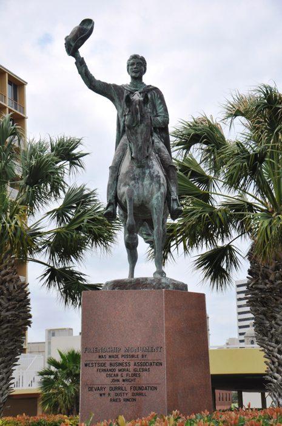

Blas de la Garza Falcón
De Enciclopedia MediaWiki, la enciclopedia libre
| Blas de la Garza Falcón | |
|---|---|
 Retrato | |
| Descripción | Capitán · L5JN-FZY |
| Fechas / lugar | 1591–1669 |
| Línea familiar | Garza García |
Blas de la Garza Falcón (1591–1669) — Militar y poblador del noreste novohispano; tronco fundador. Antepasado (13.ª generación) de Francisco Javier García Gaona por ambas líneas parentales.
Capitán Blas de la Garza Falcón (FamilySearch: L5JN-FZY)[editar]
- Nacimiento / Origen: c. 1591 en el Real de Mapimí, Nueva Vizcaya (actual Durango). Entrada al Nuevo Reino de León hacia 1603.
- Filiación: Hijo del Capitán Marcos Alonso de la Garza y del Arcón (Lepe, Huelva) y de Juana de Treviño.
- Matrimonio: 1615 en Saltillo con Beatriz González Hidalgo (
LVY3-N8R, c. 1591 – 10 may 1670, Monterrey). - Dote: Consta en escritura de fianza de 2,000 pesos (Archivo Municipal de Saltillo, 26 de abril de 1615).
- Trayectoria: Regidor, capitán de milicias y vecino principal de Monterrey.
- Defunción: Testó y murió el 20/21 de febrero de 1669 en Monterrey (sepultura el 22). Registros en los libros parroquiales de la Catedral de Monterrey.
Nota: Esta ficha se alinea con la biografía-fuente del proyecto; las cadenas de prueba detalladas figuran en la biografía de Francisco Javier García Gaona.
Referencias[editar]
- «Blas de la Garza Falcón», Genealogía Sefardí — investigación Sefarad-MX, genealogiasefardi.site/biografias/blas-de-la-garza-falcon.